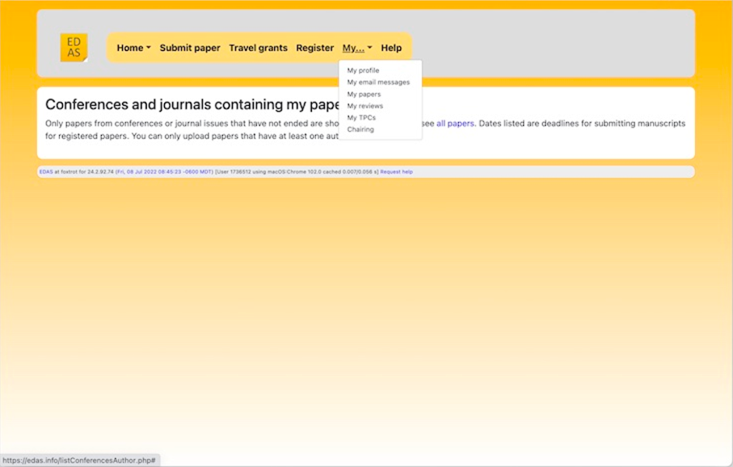
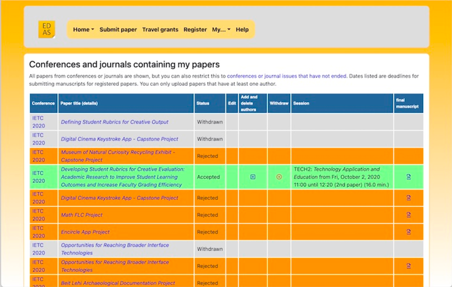
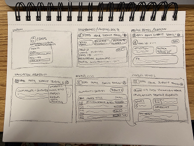
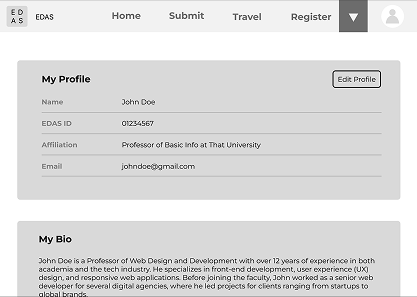
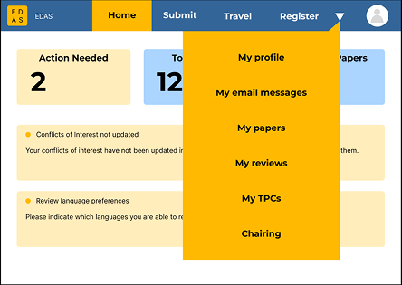
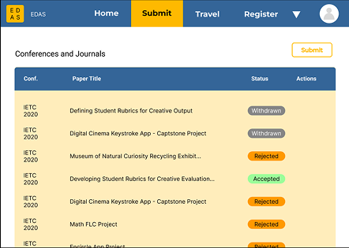

Improve Visual Appeal
Use a more consistent color palette, spacing, and visual hierarchy.
UX Research · UI Redesign · Usability
Making an academic conference management system easier to navigate, understand, and use.
Explore the ProcessThe Overview
EDAS is a conference management system used to organize academic paper submissions, peer reviews, registrations, and final manuscript uploads. While the purpose of the system is valuable, its website felt outdated and difficult to use.
This redesign focused on improving the visual appearance and usability while preserving the important tools and information that users rely on.
01 / Goals
Use a more consistent color palette, spacing, and visual hierarchy.
Help users understand where to go and what actions are available.
Present important content in a more organized and readable way.
Reduce confusion caused by crowded menus and unclear pathways.
02 / Audience
The primary audience includes people who need to upload academic papers, submit work for peer review, review submissions, and manage conference-related tasks. This can include academic researchers, scientists, engineers, and other industry professionals.
03 / Evaluation
I reviewed the existing EDAS website and selected five main pages that I believed were most useful to the user journey. I looked for places where the interface felt crowded, navigation was confusing, or information could be easier to scan.
The original navigation included many links and menu options in a small space. This made it harder to tell where to go next and increased the effort required to find common tasks.

The paper listing page displayed a large amount of information in a compact table. I wanted the redesign to create clearer groupings and make status information and actions easier to distinguish.

04 / Process
I began by analyzing the existing pages, then sketched possible layouts and refined them through peer feedback. I made adjustments as I worked, using feedback to improve the structure before completing the redesign.
I started with sketches to explore the layout and organization of the main pages. I then created wireframes to plan the navigation, content areas, and page structure before focusing on the visual details.


During the process, I went through multiple peer-review stages. I used the feedback to adjust the wireframes, then moved forward with color, icons, and a more consistent visual style.


The redesign uses a more consistent color system, clearer grouping, and a simpler navigation structure to make important tasks easier to find while retaining the system's academic purpose.
05 / Reflection
This project taught me more about how color and visual hierarchy affect the way people understand a website. I enjoyed redesigning the experience while keeping the original system's purpose in mind.
I was able to work toward my goals of making the website more visually appealing, more user-friendly, and clearer about important information. I also learned how reviewing feedback and making changes throughout the process can lead to a stronger design.
Back to Top ↑